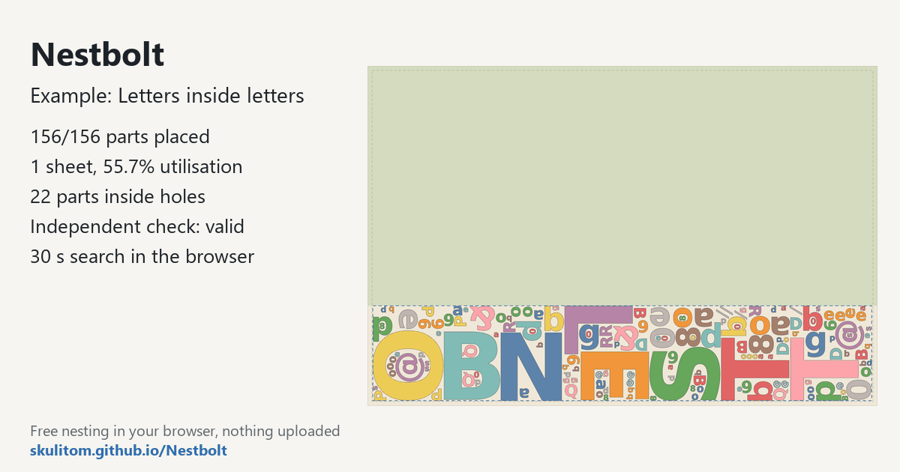
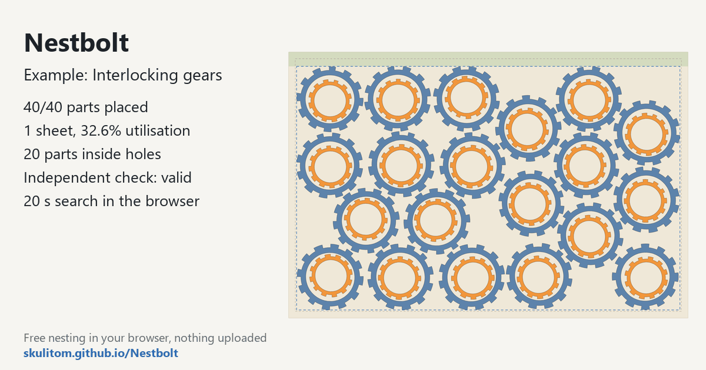
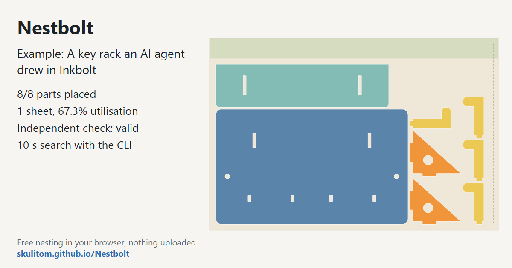
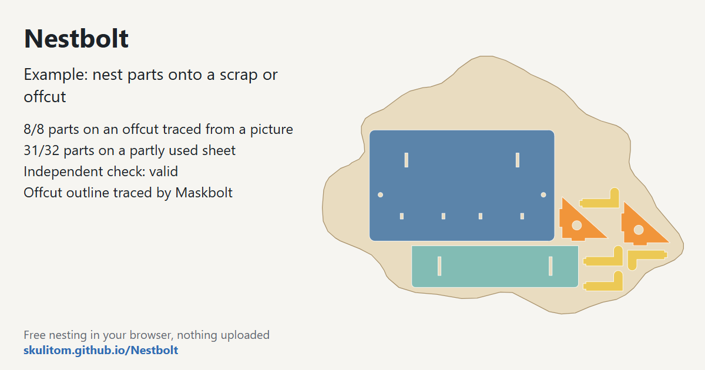

Five nesting examples to try in your browser
Each of these five bundled examples opens in Nestbolt with one click using the app's “Try an example” buttons. A click loads the drawing and starts nesting straight away. Each example page explains exactly what is in the drawing, lists its stock and search settings, and has a result section for the layout the app produced. Use them to explore a particular nesting problem before importing your own SVG or DXF.
Free and MIT-licensed; your files never leave your computer.

Finger-jointed boxes
Two 99 × 63 × 45 mm finger-jointed boxes, 12 panels, on a 400 × 300 mm laser bed.

Letters inside letters
147 glyphs in four sizes; small ones nest inside the holes of large ones.

Mechanical parts kit
138 brackets, cogs, frames and inserts on a 1220 × 2440 mm plywood sheet; inserts go in the frames.

Sewing pattern on a fabric roll
Ten FreeSewing T-shirts (40 pieces) on a 1500 mm fabric roll; grain keeps pieces at 0° or 180°.

Interlocking gears
40 gears in two sizes with free rotation, so teeth can mesh, on a 300 × 200 mm bed.
Drawn by an AI agent, nested from the command line
This example is not one of the app's buttons: download its drawing and settings from its page.

Agent-drawn key rack
An AI agent drew 8 plywood parts in Inkbolt; Nestbolt nested them on a 300 × 200 mm sheet.
Nest onto a scrap or offcut
Also not one of the app's buttons: the remnant drawings, the request files and the commands are on its page.

Nest onto a scrap or offcut
A key rack nested on a partly used sheet and on an offcut traced from a picture with Maskbolt.
Choose the example that matches your question
The boxes are a starting point for near-rectangular panels with finger joints. Look at the part quantities as well as the drawing: this job asks for two boxes. The mechanical kit moves to a full plywood sheet with several kinds of parts. Its frames and inserts make it useful for exploring how holes can become available nesting space.
The letters focus on that same part-in-part capability with glyphs in four sizes. They are a separate bundled drawing from the larger letter showcase in the README. If you want to understand how rotation permissions affect a job, compare the sewing example's 0°/180° list with the gears' free rotation. Those settings are part of the request, so keep them in view when reviewing the arrangement. To use up a partly used sheet or an odd-shaped offcut, start with the scrap example.
Read the settings before the result
Each page lists the sheet dimensions in millimetres, margin, spacing between parts, spacing at the edge, allowed rotations, quantities and time budget. These give you a concrete starting point for repeating an example. The fabric job has no margin but still has an edge-spacing setting; the mechanical kit has a free-rotation override for its cogs.
In the app, the best layout is drawn while the search runs. A box surrounds the parts on each sheet, with the clear offcut shown above them. Nestbolt compresses the last sheet towards one end to keep that offcut usable. Review both the placement of individual parts and the material left over.
Move from an example to your own drawing
- Open an example and review its quantities, dimensions and orientation rules.
- Run it with its supplied settings, then inspect the best layout and per-sheet exports.
- Drop in your own SVG or DXF and review cutting layers, stock outlines, repairs and unsupported geometry.
- Set the stock, spacing, quantities and permitted rotations for your own job before nesting it.
Nestbolt checks returned layouts with an independent validator and exports SVG/DXF from the original curves. These checks do not provide machine-safety or fit certification. For more on preparing a drawing, read the browser import guide; for the frozen comparison with other tools, see the benchmark guide.
Drawing sources
The collection includes drawings generated by Nestbolt scripts, DejaVu Sans Bold outlines, a FreeSewing Teagan pattern, Steren's Gear from Openclipart, a key rack an AI agent drew with Inkbolt, and the remnant drawing and traced offcut of the scrap example. Each example page gives its drawing's source and licence. The shared drawing licence file includes the attribution details and FreeSewing's MIT notice.